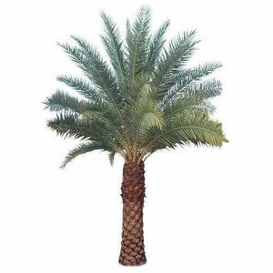
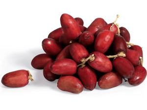

| Home | Reports | Prev | 406 | Next | Reset | Dev |


| ⲃⲛⲣⲁⲩⲛⲉ | virgin palm194 | Crum: 40b | |||||||
| ⲃ. ⲉϥⲗⲏϫ S | fresh dates195 | ||||||||
| ⲃⲛϣⲟⲟⲩⲉ S | dried dates196 | ||||||||
| ⲃ. ⲉϥⲧⲁⲝ S | pounded dates197 | ||||||||
| ⲃ. ⲛⲡⲁⲣⲉⲟⲛ | [παλαιον]198 | ||||||||
| ⲃⲁ ⲛⲃ. S
ⲃⲁⲓ ⲛⲃⲉⲛⲓ B |
palm-branch199 | ||||||||
| ⲃⲁⲗ ⲛⲃ. S | date stone200 | ||||||||
| ⲉⲃⲓⲱ ⲛⲃ. S | honey of dates201 | ||||||||
| ⲕⲁϥ ⲛⲃ. S
ⲭⲁϥ ⲛⲃⲉⲛⲓ B |
stem, trunk of palm [στελεχος]202 | ||||||||
| ⲗⲟⲟⲩ ⲛⲃ. S
ⲗⲁⲩ ⲛⲃⲉⲛⲓ B |
cluster of dates [καλλυνθρον]203 | ||||||||
| ⲙⲟ ⲛⲃ. | date water204 | ||||||||
| ⲥⲁⲛⲃ. | date seller205 | ||||||||
| ⲥⲣⲃ. S
ⲥⲉⲣⲃⲉⲛⲓ B |
palm-thorn [σκολοξ]206 | ||||||||
| ⲧⲁϭ ⲛⲃ. | cake of dates [παλαθη]207 | ||||||||
| ϣⲛⲃ., ϣⲉⲃ., ϣⲃⲃ., ϣⲟⲩⲃ., ⲥⲟⲩⲛⲃ. S
ϣⲉⲛⲃⲉⲛⲓ, ϣⲉⲃⲉⲛⲓ B |
palm-fibre [σεβεννιον]208 | ||||||||
| ϣⲁⲧⲓⲗⲁ ⲛϣⲃ. | basket (?) of palm fibre209 | Crum: 41a | |||||||
ⲃⲛⲛⲉ SAA2, ⲃⲉⲛⲓ B, ⲃⲏⲛⲓ, ⲃⲏⲛⲛⲓ F, ⲃⲛ- S nn f, I. date palm-tree: P 44 81 S, K 174 B نخلة, Cant 7 8 S, Joel 1 12 AB φοῖνιξ, BMOr 8811 242 S ⲉⲕϣⲁⲛϫⲟ ⲡϫⲉⲃⲉⲗ ⲛⲧⲃ. ⲉϩⲣⲁⲓ ⲉⲡⲕⲁϩ, Tri 612 S ⲧⲃ. ⲉⲧⲧⲏϭ ϩⲙⲡⲉⲕⲏⲓ, J 110 4 S ⲟⲩⲃ.…ⲉⲥϩⲓⲡⲙⲉⲣⲟⲥ ⲙⲡⲕⲁϩ &c; as pl: Lev 23 40 SB, Ez 41 25 SB, Jo 12 13 SA2B φοῖ.; BMar 208 S, BAp 144 S, COAd 4 S, PLond 4 516 S, Kr 3 F, AZ 23 39 F; m only Ps 91 13 B, BM 528 (p 260) F; opp ϣⲏⲛ: ShC 73 ix, ib 98 S, yet Is 1 18 A (Cl 8 4) ϣⲛⲃ. prob palm-tree and J 65 58 S ϣⲏⲛ(ⲛ)ⲃ. ⲕⲟⲩⲕ ? = κουκιοφόρον. II. its fruit, dates: Gu 48 S ⲁϥⲁⲗⲉ ⲉⲧⲃ. ⲁϥⲙⲉϩ ⲧⲟⲟⲧϥ ⲛⲃ.; mostly as pl: CO 213, 372, ST 329, Ep 174, 309, 520 S, BM 615 F; m (rare): ShC 73 136 S, PMéd 185 S, ? WS 118 S, ? BM 1087 S; dates sometimes merely fruit of ⲃ.: EW 160 B ⲟⲩⲧⲁϩ, C 41 19 B ⲕⲁⲣⲡⲟⲥ (cf Ar ثمر); dates measured in κεντηνάρια Ryl 217, ⲣⲧⲟⲃ ST 319, 438, Hall 111, ⲟⲓⲡⲉ Bodl(P) d 27, PAl 1, ⲙⲁⲁϫⲉ ST 123, WS 106, ⲕⲁⲇⲟⲩⲥ ST 329, ⲃⲉⲥⲉ CO 213, ⲕⲉⲗⲱⲗ PAl 1, ϭⲟⲟⲩⲛⲉ ST 319, ⲑⲁⲗⲓⲥ BM 637; date season (καιρός) Wess 18 5 S.
ⲃⲛⲣⲁⲩⲛⲉ, virgin palm: KroppK S girdle of ⲃⲉⲧ ⲛⲃⲛⲣ., ib to ensure conception woman shall eat ϩⲉⲛⲃⲛⲛⲉ ⲛⲣⲁⲩⲛⲉ.
ⲃ. ⲉϥⲗⲏⲕ S, fresh dates: Wess 18 5.
ⲃⲛϣⲟⲟⲩⲉ S, dried dates: WS 118 (cf ? PLond 4 517 ⲃⲉⲛⲉϣⲏⲩ).
ⲃ. ⲉϥⲧⲁⲝ S, pounded dates: PMéd 185 cf φοίνικες πατητοί ().
ⲃ. ⲛⲡⲁⲣⲉⲟⲛ (παλαιόν Chassinat) S: PMéd 111.
ⲃⲁ S, ⲃⲁⲓ B ⲛⲃ., palm-branch, v ⲃⲁ; cf also ⲃⲏⲧ.
ⲃⲁⲗ ⲛⲃ. S, date stone, v ⲃⲁⲗ.
ⲉⲃⲓⲱ ⲛⲃ. S, honey of dates: PMéd 307, P 43 241 عسل الثمر.
ⲕⲁϥ S, ⲭⲁϥ B ⲛⲃ., stem, trunk of palm: Ex 15 27 SB, Nu 33 9 SB, Job 29 18 B (S ϣⲗϩ), Si 50 12 S στέλεχος.
ⲗⲟⲟⲩ S, ⲗⲁⲩ B ⲛⲃ., cluster of dates: Lev 23 40 S (var ⲃⲏⲧ ϩⲁⲧ ⲃ.) κάλλυνθρον, BMar 208 S (var ⲕⲗⲁⲇⲟⲥ, B ⲥⲡⲁⲑⲓ), BAp 142 S, P 44 96 S, K 177 B عراجين.
ⲙⲟ ⲛⲃ. (l ⲙⲟⲩ), date water: ShC 73 136 S.
ⲥⲁⲛⲃ., date seller: BM 1095 S, ST 329 S.
ⲥⲣⲃ. S, ⲥⲉⲣⲃ. B, palm-thorn: Nu 33 55 S (var ⲥⲟⲩⲣⲉ) B, 2 Cor 12 7 B (S ⲥⲟⲩⲣⲉ) σκόλοψ, BMar 39 S = AM 62 B.
ⲧⲁϭ ⲛⲃ., cake of dates: 1 Kg 25 18 S παλάθη.
ϣⲛⲃ., ϣⲉⲃ., ϣⲃⲃ. (Hall 117), ϣⲟⲩⲃ. (P 44 66), ⲥⲟⲩⲛⲃ. (J 111 9) S, ϣⲉⲛⲃ., ϣⲉⲃ. (AM 166) B, palm-fibre, σεβέννιον ليف, growing round base of branch; gathered by monks: ShC 73 54 S; used for rope: AM 166 B, Va 61 12 B, Hall 117 S, C 43 79 B ϣϫⲱⲧ ⲛϣⲉⲃ.; for clothing: MG 25 14 B, Mor 32 6 S, raiment of ϣ. abandoned by luxurious monks: Wess 11 165, ShP 1316 37 S; darning-needles (ἀκίς) of it: P 1321 16 S; seller of it: ⲥⲁⲛϣⲃ. WS 96 S.
ϣⲁⲧⲓⲗⲁ ⲛϣⲃ. basket (?) of palm-fibre: ST 118 S.
Cf شيبانة towing-rope BIF 20 70.
On names of palm tree and its parts v Rec 16 95.
ⲥⲟⲩ- in ⲥⲟⲩⲛⲃⲉⲛⲛⲉ v ⲃⲛⲛⲉ (ϣⲛⲃ.).
ϣⲃⲛⲛⲉ, ϣⲉⲃ. v ⲃⲛⲛⲉ s f adding BM 585 F δ̅ ⲛϭⲁⲙⲟⲩⲗ ⲛϣⲃⲏⲛⲓ, ib ϣⲃⲏⲛⲛⲓ.
ϣⲛⲃⲛⲛⲉ, ϣⲃⲛⲛⲉ v ⲃⲛⲛⲉ.
ϣⲏⲩ v ϣⲓ, ϣⲓⲁⲓ, ⲃⲛⲛⲉ (ⲃⲉⲛⲉϣ.), ⲃⲣⲉϣⲏⲩ.
| view | ⲃⲓⲣ SLB ⲃⲏⲗ Sf ⲃⲓⲗ, ϥⲓⲗ F | (noun male) basket of palm-leaf [σπυρις, κοφινος]585 |
| view | ⲥⲁⲗⲟ, ⲥⲁⲗⲱ, ⲥⲁⲣⲟ S | (noun female) basket1401 |
| view | ϫⲁⲛⲟ B | (noun male) basket (?)2421 |
| view | ϭⲁⲣϭⲁⲧⲁⲛⲉ, ϭⲁⲣⲁⲧⲏⲛⲏ S | (noun female) bread-basket or sim2621 |
| view | ⲃⲉⲣⲥⲓϯ B | (noun male) basket holding bread2730 |
| view | ϫⲛⲟϥ, ϫⲉⲛⲟϥ, ϫⲉⲛⲟⲃ S ϫⲛⲁϥ Sf ϭⲛⲟϥ, ϣⲛⲟϥ, ϣⲛⲟⲩϥ B | (noun male) basket, crate2427 |
| view | ϫⲁⲛⲓϫⲓ B | (noun male) palm-fibre for rope making2431 |
| view | plural: ϭⲁⲡⲉⲧ L plural: ϫⲁⲫⲁⲧ B | (noun) fibre (?) of palm tree2600 |
| view | ⲕⲁⲫⲁϫⲓ, ⲭⲁⲫⲁϫⲓ B | (noun male) part of date palm, lit leaf of fibre2884 |
| view | ⲙⲁϣⲣⲧ S ⲙⲁϣⲉⲣⲧ SB | (noun male/female) cable of palm fibre1139 |
| view | ϣⲑⲱⲧ B | (noun female) rope of palm-fibre1872 |
| view | ϣⲏⲧⲉ S | (noun female) palm fibre, ? whence belt, collar of it [περιτραχηλιον]1979 |
| view | ⲃⲏⲛⲉ, ⲃⲏⲛⲛⲉ S ⲃⲏⲛⲓ, ⲃⲉⲛⲓ B ⲃⲏⲛⲓ F | (noun male/female) swallow [χελιδων]2720 |